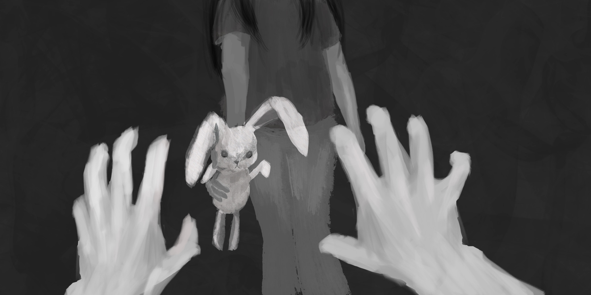
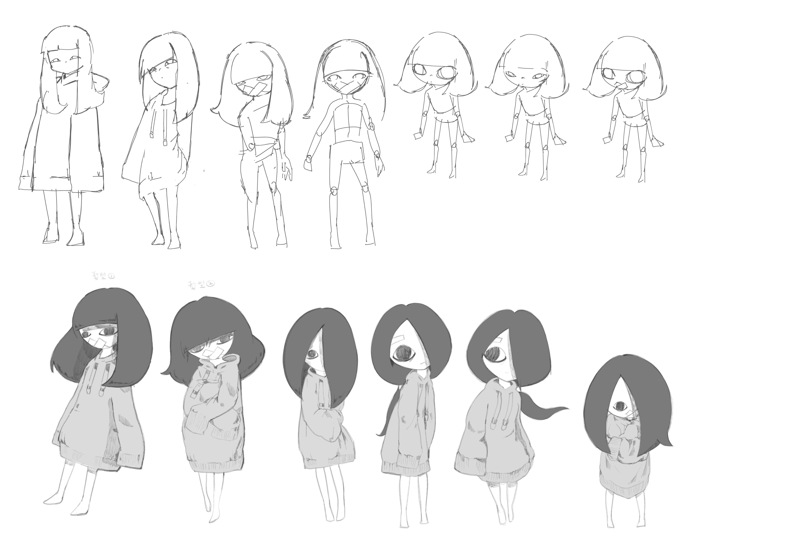

7|
20 /2018
Goal Setting
- -A narrative animation will be present through Virtual Reality role play game(VR RPG).
-First person view (1PV) aims to give audience a sense of belonging into the story and action will affect some story plots.
-Black and white color animation and player VR view will be this project major characteristic. Normally, color gives us too much data and let audience miss a lot of details. So, black and white this color constraints gradually build-up of suspense throughout the animation and game.
27 /2018
Story Development
-
Up to now, human suspect the world of afterlife in different forms. The major religions hold a strong belief in reincarnation. This project starts from the perspective of the death until at the end of transmigration.
In the beginning of the game, an animation starts from reminiscing the days that main character is playing hide and seek with a little girl. Audience is the main character that name and appearance do not clearly clarified. The little girl not only will be the game manager (GM), but also plays a supporting role of the story plots.
NOTE:
Detail storyline will be confirmed in coming months.
8|
2 /2018
VR Realtime Research
-
-Every trigger of scene element will affect and alter the story flow. To bring the audience experience the life after death, VR technique will be used so as to present a real and lively involvement with the animation.
-In this project, the audience will invited to directly interact will the storyline and the scene within the animation. The major concern will be the realistic of the VR world. So, real-time ray tracing and rendering will be required.
-As ray tracing cost high computing power, this project will decide to do partially real-time ray tracing of some objects which are interactable.
-Some scene objects' lighting and texture will be baked in the blender first, then, import to unity for post-processing.
NOTE:
Unity will be used for realtime lighting.
9 /2018
Story Development(cont'd)
-
Chapter 0 - Intro

Daughter's memory with her parents. Mother passed a rabbit doll to her. As 1PV is from daughter angle of sight, she does only have vague memories of her mother appearance. Once daughter (audience) received the doll. Chapter 0 ended.
*1PV: Daughter
Chapter 1 - Follow Me
At the beginning, the game purpose looks like playing hide and seek with the little girl, player will be the “ghost” who to seek the little girl. During the finding progress, the player has to collect shattered fabric pieces so as to repair the tattered teddy bear which is the little girl’s most favorite toy. Finding each fabric pieces will show and tell some parts of the stories: school bullying, drug abuse, domestic violence, etc. At the end of the story, the main character (player) found bone and stiff pieces inside some part of the tattered teddy bear. Player finally “found” the little girl and wins the game.
*1PV: Mother
NOTE:
Detail storyline will be confirmed after consultation.
NOTE:
Irregular scenes.
Story setting will be the world after death, which is thinking out of the box.
23 /2018
Characters Design
-
That little girl identity will not specific defined which extends audience imagination unlimitedly. She can be known as main characters’ daughter, or even known as a projection of the main characters’ childhood.

Character Designed by: Mandy Yu
30 /2018
VR Study
-
-Different VR headsets have different features.
-Three degrees of freedom (3DoF) only have rotational tracking and powered by a mobile device
Eg: Google Cardboard, VR Box
-Six degrees of freedom (6DoF) have positional tracking and powered by a PC.
Eg: HTC Vive, Oculus Rift
-All headsets provide rotational tracking, but positional tracking only available on 6DoF. 6DoF allows people to move around, get closer to objects, reach forward, which is vital to provide people feeling of presence in a real environment.
NOTE:
going to test on web vr (3dof)
9|
1 /2018
VR Test - WEB VR (3DoF)
-
-By using A-Frame
-A-Frame supports VR on either desktop or mobile headset. AR on either AR headsets or mobile.
-Controller input option: Leap motion
{kind=link}
{kind=link}